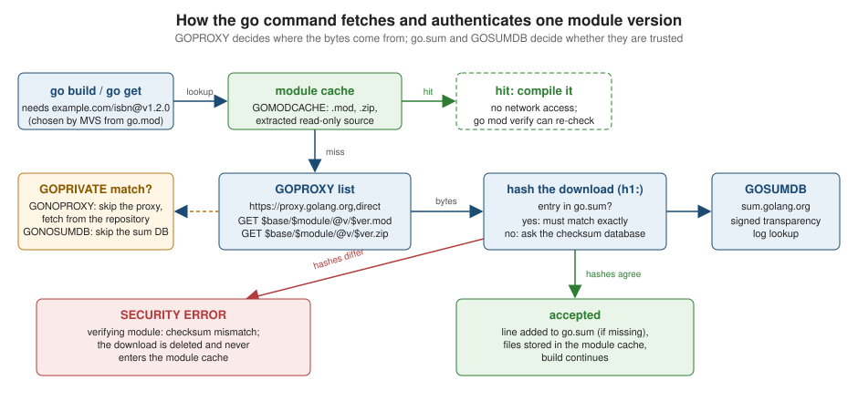

Modules and Dependency Management
|
This content was generated with the assistance of AI and should be verified against the official documentation before being relied on in production. |
This page is written against Go 1.27 (go1.27.2), checked on 2026-10-18. It is the reference for everything the go
command does with dependencies: what a module is, how versions are chosen, what each line of go.mod and go.sum
means, how modules are downloaded and authenticated, and how to work with private code, forks, vendored copies and
developer tools. Its companions are Workspaces,
Versioning and Publishing (multi-module development and releasing your own module),
Toolchain Versions and Compatibility (the
toolchain line and GOTOOLCHAIN in depth) and
The go Command, Builds and
Cross-Compilation.
All the example output was produced by really running Go 1.27.2. No network was used: every example.com/...
module on this page was published into a local, file-based module proxy (GOPROXY=file://...) built for the
purpose, with GOSUMDB=off (there is no checksum database to ask for modules that exist only on one machine) and
GOTOOLCHAIN=local. The proxy protocol is the same one proxy.golang.org speaks, so the commands and messages are
the real ones; only paths are shortened ($GOMODCACHE is the module cache directory). Features that need the public
network (the public proxy, the checksum database, GOAUTH, toolchain downloads) are described from the documentation
and labelled not run.
Why modules exist
Before Go 1.11, all Go code lived in one $GOPATH/src tree, there was no notion of a version (go get fetched the
tip of a repository’s default branch) and every project shared one copy of each dependency. Modules replaced that:
-
a module is a tree of packages versioned together, identified by a module path and described by a
go.modfile at its root; -
every dependency is pinned to an exact, immutable version, so builds are reproducible from
go.modandgo.sumalone, without a separate lock file; -
versions are chosen with minimal version selection (MVS), a deterministic rule with no solver and no surprises;
-
downloads go through a module proxy and are checked against a global checksum database, so a dependency cannot silently change.
Modules were introduced in Go 1.11, became the default in Go 1.16 (the GO111MODULE=auto mode and GOPATH mode are
effectively gone for normal projects), and go get stopped building and installing programs in Go 1.18 (use
go install pkg@version, covered below). Everything in this page is module-aware mode, which is the only mode a new
project should use.
Vocabulary
| Term | Meaning |
|---|---|
Module |
A collection of packages released together, rooted at a directory containing |
Module path |
The name of the module, declared on the |
Package path |
The import path of one package: the module path plus the slash-separated directory below the module root ( |
Main module |
The module in the current directory whose |
Direct dependency |
A module that provides a package imported by a package or test in the main module. |
Indirect dependency |
A module needed only because a dependency needs it. Marked |
Module graph |
The directed graph of module versions whose edges are the |
Build list |
The list of module versions selected by MVS from the graph. |
Module cache |
The local directory ( |
Module proxy |
An HTTP server (or even a directory, via |
Checksum database |
A transparency log (by default |
Source: Go Modules Reference: Glossary
Module paths
The module path is written on the first line of go.mod:
module example.com/shelf
go 1.27The rules, which go mod init and the tooling enforce:
-
The path is the import-path prefix for every package in the module: the package in the
catalogdirectory isexample.com/shelf/catalog. -
For a module that other people will
go get, the path starts with the repository location the code is served from (github.com/albertoirurueta/shelf, or a vanity domain you control that redirects to it) and ends with the directory of the module inside the repository when it is not at the root. This is how thegocommand finds the code: it asks the proxy, or fetches the repository itself. -
The first element must contain a dot (so it cannot collide with a standard-library path such as
net/http). Names likeshelfwork for a throwaway program that no one imports; they cannot be downloaded. -
Only ASCII letters, digits and a few punctuation characters are allowed, no leading or trailing slash. Upper-case letters are legal, but the proxy and cache case-encode them (
!mforM), so avoid them. -
A module released at v2 or above ends in a major version suffix (
/v2), covered below. -
The path of a module that is only ever built locally (an application, an internal tool) can be anything well-formed. Using the real repository path anyway means the module can later be imported.
go mod init creates the file. Run without an argument it tries to infer the path (from the directory when it is under
GOPATH, or from import comments), so pass the path explicitly:
$ go mod init example.com/shelf
go: creating new go.mod: module example.com/shelf
go: to add module requirements and sums:
go mod tidy
$ go mod edit -go=1.27
$ cat go.mod
module example.com/shelf
go 1.27The Go 1.26 release notes say go mod init writes a go line one release lower than the running toolchain (so
that new modules stay usable with a supported older release). The go1.27.2 toolchain used for this page wrote the
toolchain’s own version, go 1.27.2. Check which line your toolchain produced and set the one you mean with
go mod edit -go=1.27 or go get go@1.27.0; every go.mod shown below uses go 1.27.
Versions
Module versions are semantic versions with a leading v: vMAJOR.MINOR.PATCH, optionally followed by a
pre-release (-rc.1) and build metadata (+meta, ignored when versions are compared).
-
Major changes when the API breaks, minor when functionality is added compatibly, patch for compatible fixes.
-
v0.y.zcarries no compatibility promise;v1and above promise that code written againstv1.xkeeps compiling against any laterv1.y. -
A pre-release (
v1.2.0-rc.1) sorts below its release, and thegocommand never chooses one automatically unless nothing else exists or you ask for it. -
A version is a tag in the repository, or a snapshot in a proxy; once published it must never change.
Pseudo-versions
A commit that has no tag can still be required, by a pseudo-version that encodes a base, the UTC commit time and the first 12 characters of the commit hash. There are three forms, chosen so that a pseudo-version sorts after the version it is based on and before the next tagged release:
| Form | When it is used |
|---|---|
|
No earlier tag exists ( |
|
The nearest earlier tag is a pre-release |
|
The nearest earlier tag is a release |
You rarely type one: go get example.com/lib@main (a branch) or go get example.com/lib@0123456789ab (a commit)
resolves to one. The local proxy used on this page serves a snapshot module under an explicit pseudo-version:
$ go get example.com/edge@v0.0.0-20261001093000-0123456789ab
go: downloading example.com/edge v0.0.0-20261001093000-0123456789ab
go: added example.com/edge v0.0.0-20261001093000-0123456789abPseudo-versions are for testing a fix before it is tagged. The go command checks that the commit really is on the
history of the stated base tag, so a pseudo-version cannot be used to dodge MVS. Prefer a tagged release in anything
you ship.
Major version suffixes
The import compatibility rule is the key idea: if an old and a new package have the same import path, the new one must be backwards compatible with the old one. A breaking change therefore needs a new import path, and modules get it by appending the major version to the module path:
| Release | Module path | Import path of a package barcode |
|---|---|---|
|
|
|
|
|
|
|
|
|
The consequence is that two major versions of a module are two different modules and can be in one build, which
lets a large program migrate gradually. The local proxy publishes both example.com/barcode v1.0.0 (with
Encode(s string) string) and example.com/barcode/v2 v2.0.0 (with a changed signature,
Encode(s string, width int) string). One file can import both:
package main
import (
"fmt"
barcode "example.com/barcode"
barcodev2 "example.com/barcode/v2"
"example.com/edge"
)
func labels() {
fmt.Println(barcode.Encode("0306406152"))
fmt.Println(barcodev2.Encode("0306406152", 13))
fmt.Println(edge.Name)
}The go.mod after go mod tidy lists the two modules as unrelated requirements, and go list -m all shows both:
$ go run ./cmd/shelf
v1:0306406152
v2:0306406152
edge snapshot
true false
the-left-hand-of-darkness
isbn v1.2.0 / checksum v1.5.0
textutil v1.1.0 / checksum v1.5.0
$ go list -m all
example.com/shelf
example.com/barcode v1.0.0
example.com/barcode/v2 v2.0.0
example.com/checksum v1.5.0
example.com/edge v0.0.0-20261001093000-0123456789ab
example.com/isbn v1.2.0
example.com/textutil v1.1.0Two details. First, the major version suffix is /v2, never /v2.1; there is one module per major version, not
per minor. Second, the module path is written in go.mod of the new major version
(module example.com/barcode/v2), and a v2 release whose go.mod forgets the suffix is rejected. How to release
a new major version is covered in
Workspaces, Versioning and Publishing.
Versions above v1 without a go.mod (incompatible)
Some repositories tagged v2.0.0 or higher before they adopted modules and have no go.mod. The go command
treats them as part of the v0/v1 module path and labels the version v4.1.2+incompatible. A +incompatible
version is in the same module as v1, so go get -u may move up to it without warning that it may break the build.
Libraries that adopt modules after tagging v2 should release a new major version with the /vN suffix rather than
add a go.mod to the existing tags.
Version queries
Anywhere a command accepts path@query, the query is resolved against the versions the proxy lists:
| Query | Selects |
|---|---|
|
That exact version |
|
The highest version with that prefix |
|
The highest version below (or equal to) the target |
|
The lowest version above (or equal to) the target |
|
The highest release; if none exists the highest pre-release; if no tags, a pseudo-version of the default branch |
|
Like |
|
The latest patch of the currently required minor version |
|
Removal (go get only) |
a commit, tag or branch name |
That revision (a pseudo-version unless the commit is tagged with a semver) |
A throwaway module example.com/patchy with releases v1.0.0, v1.0.3, v1.1.0 and a pre-release v1.2.0-rc.1 shows the
difference. Each line below follows the previous (the first adds v1.0.0):
$ go get example.com/patchy@v1.0.0
go: added example.com/patchy v1.0.0
$ go get -u=patch example.com/patchy
go: upgraded example.com/patchy v1.0.0 => v1.0.3
$ go get example.com/patchy@v1.0.0
go: downgraded example.com/patchy v1.0.3 => v1.0.0
$ go get example.com/patchy@patch
go: upgraded example.com/patchy v1.0.0 => v1.0.3
$ go get example.com/patchy@upgrade
go: upgraded example.com/patchy v1.0.3 => v1.1.0
$ go get example.com/patchy@v1.2.0-rc.1
go: upgraded example.com/patchy v1.1.0 => v1.2.0-rc.1
$ go get example.com/patchy@latest
go: downgraded example.com/patchy v1.2.0-rc.1 => v1.1.0
$ go get 'example.com/patchy@<v1.1.0'
go: downgraded example.com/patchy v1.1.0 => v1.0.3
$ go get 'example.com/patchy@>=v1.0.0'
go: downgraded example.com/patchy v1.0.3 => v1.0.0Notice that @latest downgraded from the pre-release: latest means the newest release, and an explicit
pre-release is not one. Quote queries containing < or > so the shell does not treat them as redirections, and
note that only a single comparison is accepted (a range such as >=1.0.3,<1.1.0 is rejected with
invalid semantic version).
The go.mod file
go.mod is a line-oriented text file with // comments. Each directive is a keyword followed by arguments, and
several of the same kind can be grouped in parentheses. The grammar is deliberately small; the go command edits
the file itself (go get, go mod tidy), and go mod edit is the scripting interface.
| Directive | Since | Purpose |
|---|---|---|
|
1.11 |
Declares the module path. A |
|
1.11 (mandatory minimum from 1.21) |
The language version of the module and the minimum Go release needed to build it. |
|
1.21 |
A suggested minimum toolchain, used when the main module is built. |
|
1.23 |
Default values of GODEBUG settings for the main module’s programs. |
|
1.11 |
A dependency and its minimum version; |
|
1.24 |
A command in a dependency that |
|
1.25 |
Directories package patterns must skip. |
|
1.11 |
Forbids a specific version of a dependency (main module only). |
|
1.11 |
Substitutes another version, module or local directory (main module only). |
|
1.16 |
Declares that versions of this module should not be used. |
Only the main module’s replace, exclude, godebug, tool and ignore lines have any effect; the same
directives in a dependency’s go.mod are ignored. A well-formed file looks like this (the shelf module of this
page, once it has a few dependencies):
module example.com/shelf
go 1.27
require (
example.com/barcode v1.0.0
example.com/barcode/v2 v2.0.0
example.com/edge v0.0.0-20261001093000-0123456789ab
example.com/isbn v1.2.0
example.com/textutil v1.1.0
)
require example.com/checksum v1.5.0 // indirectTwo require blocks is the convention: direct dependencies first, // indirect ones in the second block. Since
Go 1.27, go mod tidy enforces this layout for modules with go 1.27 or later, merging stray blocks. Starting from
a file with four scattered blocks and a comment:
module example.com/shelf
go 1.27
require example.com/isbn v1.2.0
require example.com/checksum v1.5.0 // indirect
// text rendering
require example.com/textutil v1.1.0
require (
example.com/checksum v1.5.0 // indirect
)$ go mod tidy
$ cat go.mod
module example.com/shelf
go 1.27
require (
example.com/isbn v1.2.0
// text rendering
example.com/textutil v1.1.0
)
require example.com/checksum v1.5.0 // indirectThe go directive
The go line states the language version the module is written in and, since Go 1.21, is a strict minimum:
a toolchain older than the line refuses to build the module, and it must be greater than or equal to the go line
of every dependency. Its effects:
-
Language features. The compiler rejects syntax newer than the line, in the module’s own packages. The code below uses
for i := range 3(Go 1.22) and loop variables captured per iteration (also 1.22):
package main
import "fmt"
func main() {
var fs []func()
for i := range 3 {
fs = append(fs, func() { fmt.Print(i, " ") })
}
for _, f := range fs {
f()
}
fmt.Println()
}$ cat go.mod
module example.com/tc
go 1.21
$ go build .
# example.com/tc
./main.go:7:17: cannot range over 3 (untyped int constant): requires go1.22 or later (-lang was set to go1.21; check go.mod)
$ cat go.mod
module example.com/tc
go 1.22
$ go run .
0 1 2-
Library semantics. Behaviour changes governed by GODEBUG settings (see below) default to the behaviour of the release named in the
goline. -
Standard library API versions. Since Go 1.27,
go testruns thestdversionvet check by default;go vetalways could. It reports a standard-library symbol that is newer than the module’sgoline.slices.Repeatarrived in Go 1.23:
package main
import (
"fmt"
"slices"
)
func main() {
fmt.Println(slices.Repeat([]int{1, 2}, 2))
}$ go build . # go 1.22 in go.mod: compiles, the toolchain has the function
$ go vet .
main.go:9:21: slices.Repeat requires go1.23 or later (module is go1.22)
$ go test .
# example.com/t
# [example.com/t]
./main.go:9:21: slices.Repeat requires go1.23 or later (module is go1.22)
FAIL example.com/t [build failed]
FAILSource: Go 1.27 release notes: go test
-
go command behaviour. From
go 1.14avendordirectory is used automatically; fromgo 1.16theallpattern means only packages transitively imported by the main module; fromgo 1.17go.modlists every module that provides a needed package (enabling pruning and lazy loading, below); fromgo 1.21the line is a mandatory minimum andgo.sumis more complete. -
Toolchain selection. The line is the lower bound for the toolchain switch described next.
A go line can be raised by go get go@1.27.2 (or go get go@latest, which needs the network and was not run
here) and by go mod tidy -go=1.27. Raising it below what a dependency needs is not possible: go mod tidy bumps a
go 1.16 line to go 1.21 when a dependency declares go 1.21.
The toolchain line and GOTOOLCHAIN
When a go.mod asks for more than the installed go command, Go 1.21 and later switch toolchains rather than
fail. GOTOOLCHAIN (default auto) controls this: local never switches, go1.27.2 pins a release, and
go1.27.2+auto means "at least this, switch if go.mod says more". The main module’s toolchain line (for
example toolchain go1.27.2) suggests a toolchain at least as new as the go line; it matters only when it is
newer than the toolchain that would otherwise be used. With the module requiring Go 1.28 on a machine whose
toolchain is 1.27.2:
$ cat go.mod
module example.com/tc
go 1.28
$ GOTOOLCHAIN=local go build .
go: go.mod requires go >= 1.28 (running go 1.27.2; GOTOOLCHAIN=local)
$ GOTOOLCHAIN=go1.27.2+auto go build .
go: downloading go1.28.0 (darwin/arm64)
go: download go1.28.0 for darwin/arm64: toolchain not availableSource: Go Toolchains
With GOTOOLCHAIN=auto the second command would download golang.org/toolchain@v0.0.1-go1.28.0.<os>-<arch> from
the module proxy and run it (an unreleased 1.28.0 is not available, hence the real error above; the download
itself is not run here). The downloaded toolchain is itself a module, verified against the checksum database like
any other. Since Go 1.25 the go command no longer adds a toolchain line when it updates the go line, so the
line is mostly something you write on purpose. go get go@1.27.2 also drops a redundant toolchain go1.27.2:
$ cat go.mod
module example.com/tc
go 1.27
toolchain go1.27.2
$ go get go@1.27.2
go: upgraded go 1.27 => 1.27.2
go: removed toolchain go1.27.2
$ go get toolchain@none
$ cat go.mod
module example.com/tc
go 1.27.2GODEBUG=toolchaintrace=1 (Go 1.24) prints the toolchain-selection steps; the full story, including how a dependency
that needs a newer Go than yours is handled, is in
Toolchain Versions and Compatibility.
The godebug directive
Go keeps old behaviour behind GODEBUG settings so that a go 1.2x module keeps working when it builds with a newer
toolchain. The go line chooses the defaults; the godebug directive overrides single settings for the whole
main module, as if every main package had //go:debug key=value. panic(nil) showed in Go 1.21 how this works:
the program recovers a *runtime.PanicNilError, unless panicnil=1 restores the old behaviour.
package main
import (
"fmt"
"runtime"
)
func main() {
defer func() {
r := recover()
_, isNil := r.(*runtime.PanicNilError)
fmt.Printf("recovered=%v isPanicNilError=%t\n", r, isNil)
}()
panic(nil)
}$ go run ./cmd/panics
recovered=runtime error: panic called with nil argument isPanicNilError=true
$ go mod edit -godebug=panicnil=1
$ cat go.mod
module example.com/shelf
go 1.27
godebug panicnil=1
$ go run ./cmd/panics
recovered=<nil> isPanicNilError=falseThe same setting can be placed in the source of the main package, which is recorded in the binary and visible with
go version -m (the DefaultGODEBUG build setting):
//go:debug panicnil=1
package main$ go version -m ./panics.bin | grep -i godebug
build DefaultGODEBUG=panicnil=1godebug default=go1.21 sets the whole behaviour baseline to an older release. Three rules protect you from
typos and from stale settings. A key that does not exist is an error in the main module; and, new in Go 1.27, a
setting whose support was removed (like asynctimerchan, whose last behaviour is now unconditional) is accepted
only with its final value:
$ go mod edit -godebug=nosuchsetting=1
$ go build ./cmd/shelf
go: error loading go.mod:
go.mod:10: unknown godebug "nosuchsetting"
$ printf 'module example.com/t\n\ngo 1.27\n\ngodebug asynctimerchan=1\n' > go.mod
$ go build .
go: error loading go.mod:
go.mod:5: removed GODEBUG "asynctimerchan" set to old value "1" (https://go.dev/doc/godebug#go-127)
$ printf 'module example.com/t\n\ngo 1.27\n\ngodebug asynctimerchan=0\n' > go.mod
$ go build .Source: Go 1.27 release notes: GODEBUG
The require directive
require path version states the minimum version of a module the main module needs; the version actually used
is the one MVS selects (next section). The // indirect comment marks a requirement that no package of the main
module imports. Since Go 1.17 these indirect lines are there on purpose, so the go command can read only the main
go.mod to find every module that contributes code. Run go mod tidy to get the comments right. Right after
go get they may be wrong, which is a real example of why tidy exists:
$ go get example.com/isbn@v1.2.0 example.com/textutil@v1.1.0
go: added example.com/checksum v1.4.0
go: added example.com/isbn v1.2.0
go: added example.com/textutil v1.1.0
$ cat go.mod
module example.com/shelf
go 1.27
require (
example.com/checksum v1.4.0 // indirect
example.com/isbn v1.2.0 // indirect
example.com/textutil v1.1.0 // indirect
)
$ go mod tidy -diff
diff current/go.mod tidy/go.mod
--- current/go.mod
+++ tidy/go.mod
@@ -3,7 +3,8 @@
go 1.27
require (
- example.com/checksum v1.4.0 // indirect
- example.com/isbn v1.2.0 // indirect
- example.com/textutil v1.1.0 // indirect
+ example.com/isbn v1.2.0
+ example.com/textutil v1.1.0
)
+
+require example.com/checksum v1.4.0 // indirectThe program being built is the one from the running scenario’s command:
package main
import (
"fmt"
"example.com/isbn"
"example.com/textutil"
)
func main() {
fmt.Println(isbn.Valid("0306406152"), isbn.Valid("0306406153"))
fmt.Println(textutil.Slug("The Left Hand of Darkness"))
fmt.Println(isbn.Release())
fmt.Println(textutil.Release())
}$ go mod tidy
$ go run ./cmd/shelf
true false
the-left-hand-of-darkness
isbn v1.2.0 / checksum v1.4.0
textutil v1.1.0 / checksum v1.4.0The last two lines show something to remember: isbn v1.2.0 asks for checksum v1.3.0, textutil v1.1.0 asks for
v1.4.0, and the program is built with v1.4.0, the highest of the requested minimums.
The module directive and deprecation
A comment paragraph that begins with Deprecated: immediately before the module line marks the whole module as
deprecated (the text after the colon is the message). The go command prints it when the module is added, and
go list -m -u marks it:
// Deprecated: use example.com/isbn instead.
module example.com/oldlib
go 1.21$ go get example.com/oldlib@v1.0.0
go: downloading example.com/oldlib v1.0.0
go: module example.com/oldlib is deprecated: use example.com/isbn instead.
go: added example.com/oldlib v1.0.0
$ go list -m -u example.com/oldlib
example.com/oldlib v1.0.0 (deprecated)The deprecation notice is read from the latest version of the module, so a module can be deprecated after the fact
by publishing one more release. Individual packages are deprecated with a Deprecated: paragraph in their package
comment (see
Documentation and Doc Comments).
The retract directive
retract is for the author of a module: it says that some versions were published by mistake or contain a severe
problem. The go command then never upgrades to them automatically and warns anyone who requires them. The directive
takes a single version or a closed range [v1.0.0, v1.0.5], with a rationale in a comment:
module example.com/isbn
go 1.21
require example.com/checksum v1.3.0
retract v1.0.0 // wrongly rejected ISBNs ending in XRetractions are read from the highest version of the module (the one @latest resolves to before retractions are
applied), so to retract you publish a new release containing the directive. A retracted version stays available, so
existing builds do not break. Users learn about it when they check for updates or ask for it explicitly:
$ go list -m -versions example.com/isbn
example.com/isbn v1.0.1 v1.2.0
$ go list -m -versions -retracted example.com/isbn
example.com/isbn v1.0.0 v1.0.1 v1.2.0
$ go get example.com/isbn@v1.0.0
go: downloading example.com/isbn v1.0.0
go: warning: example.com/isbn@v1.0.0: retracted by module author: wrongly rejected ISBNs ending in X
go: to switch to the latest unretracted version, run:
go get example.com/isbn@latest
go: downgraded example.com/isbn v1.2.0 => v1.0.0
$ go list -m -u all
example.com/shelf
example.com/checksum v1.5.0
example.com/isbn v1.0.0 (retracted) [v1.2.0]
example.com/textutil v1.1.0Retraction is a communication mechanism, not a security boundary: it relies on consumers running go list -m -u,
go get or a tool such as govulncheck. A vulnerability is reported separately, through the Go vulnerability
database (see Crypto and Security).
The exclude directive
exclude path version stops the go command from ever using a version, in the main module only. It is the
blunt tool for "this version is broken for me, and I cannot change who requires it". MVS skips the excluded version
and selects the next higher one that is not excluded:
$ go mod edit -exclude=example.com/checksum@v1.5.0
$ go get example.com/checksum@v1.5.0
go: dropping requirement on excluded version example.com/checksum v1.5.0
go: example.com/checksum@v1.5.0: excluded by go.mod
$ go get example.com/checksum@latest
go: dropping requirement on excluded version example.com/checksum v1.5.0
go: downgraded example.com/checksum v1.5.0 => v1.4.0
$ cat go.mod
module example.com/shelf
go 1.27
require (
example.com/isbn v1.2.0
example.com/textutil v1.1.0
)
require example.com/checksum v1.4.0 // indirect
exclude example.com/checksum v1.5.0Prefer a retract (if you own the module) or a normal require of a fixed version over exclude. The directive
has no effect in modules you depend on, so it cannot protect your consumers.
The replace directive
replace substitutes the contents of a module. The left side is a module path with an optional version (without a
version, all versions are replaced); the right side is either another module path with a version, or a local
directory. Replacements apply only in the main module, which makes them right for forks and local development and
wrong for anything your own consumers must see.
=> points example.com/textutil at a local fork next to the project:
module example.com/textutil
go 1.27
require example.com/checksum v1.4.0$ go mod edit -replace=example.com/textutil=../textutil-fork
$ go mod tidy
$ cat go.mod
module example.com/shelf
go 1.27
require (
example.com/isbn v1.2.0
example.com/textutil v1.1.0
)
require example.com/checksum v1.5.0 // indirect
replace example.com/textutil => ../textutil-fork
$ go run ./cmd/shelf
true false
the_left_hand_of_darkness
isbn v1.2.0 / checksum v1.5.0
textutil LOCAL FORK / checksum v1.5.0
$ go list -m all
example.com/shelf
example.com/checksum v1.5.0
example.com/isbn v1.2.0
example.com/textutil v1.1.0 => ../textutil-forkThe local directory must contain a go.mod with the replaced module’s path. Local replacements need no go.sum
entries (no download, nothing to verify), and the replaced v1.1.0 is still the version recorded in go.mod, since
that is what other modules in the graph refer to. A replacement with a version is the way to pin a module to a
different release without touching what dependencies request:
$ go mod edit -replace=example.com/checksum@v1.5.0=example.com/checksum@v1.4.0
$ go mod tidy
$ go run ./cmd/shelf
true false
the-left-hand-of-darkness
isbn v1.2.0 / checksum v1.4.0
textutil v1.1.0 / checksum v1.4.0
$ go list -m all
example.com/shelf
example.com/checksum v1.5.0 => example.com/checksum v1.4.0
example.com/isbn v1.2.0
example.com/textutil v1.1.0If you forget the go mod tidy after adding a versioned replacement, the next build reports the missing hashes
(missing go.sum entry for module providing package ...), because the replacement version needs its own go.sum
line. A replace that points to a local path must never be published: other modules cannot see your directory,
which is why go mod edit -replace is for development and workspaces
(Workspaces, Versioning and Publishing) are
the better tool for multi-module work.
The tool directive
Programs that a project needs while developing (a code generator, a linter, stringer) used to be pinned by a
blank import in a file named tools.go guarded by //go:build tools, so that go mod tidy kept their module in
go.mod. Go 1.24 made this a first-class feature: a tool directive names a main package of a dependency, and
go tool runs it.
The local proxy publishes example.com/lintkit, whose cmd/shelflint is a main package:
package main
import (
"fmt"
"os"
)
func main() { fmt.Println("shelflint v0.3.0: checked", len(os.Args)-1, "files") }$ go get -tool example.com/lintkit/cmd/shelflint@v0.3.0
go: downloading example.com/lintkit v0.3.0
go: added example.com/lintkit v0.3.0
$ cat go.mod
module example.com/shelf
go 1.27
require (
example.com/barcode v1.0.0
example.com/barcode/v2 v2.0.0
example.com/edge v0.0.0-20261001093000-0123456789ab
example.com/isbn v1.2.0
example.com/textutil v1.1.0
)
require (
example.com/checksum v1.5.0 // indirect
example.com/lintkit v0.3.0 // indirect
)
tool example.com/lintkit/cmd/shelflint
$ go tool
asm
cgo
compile
cover
fix
link
preprofile
vet
shelflint (example.com/lintkit/cmd/shelflint)
$ go tool shelflint cmd/shelf/main.go cmd/shelf/labels.go
shelflint v0.3.0: checked 2 files
$ go list tool
example.com/lintkit/cmd/shelflint
$ go mod why -m example.com/lintkit
# example.com/lintkit
example.com/lintkit/cmd/shelflintSource: Managing dependencies: Tools
Everything works through the same machinery as ordinary dependencies, so tool versions are pinned by go.mod and
verified by go.sum:
-
go get -tool pkg@versionadds thetoolline and therequire;go get -tool pkg@noneremoves the line; -
go get toolupgrades every tool at once,go install toolinstalls them intoGOBIN, andgo build toolandgo list tooluse the sametoolmeta-pattern; -
go tool namebuilds the program (cached in the build cache since 1.24, so repeated runs are fast) and runs it;go tool -n nameprints the path of the compiled executable without running it; -
the Go distribution ships fewer prebuilt tool binaries from Go 1.25, building and running the rest of its own tools on demand through the same
go toolpath; -
go mod edit -tool=and-droptool=edit the directive. In a workspacetoolmeans the union of the tools of every module.
The tools.go file is now unnecessary (and its //go:build tools constraint is just a way to keep a file out of
every build). Delete it, run go get -tool for each import, then go mod tidy. When a tool is installed for use
outside any project, go install with an explicit version ignores go.mod altogether:
$ cd /tmp/empty
$ GOBIN=$GOPATH/gobin go install example.com/lintkit/cmd/shelflint@v0.3.0
$ $GOPATH/gobin/shelflint a b c
shelflint v0.3.0: checked 3 files
$ go version -m $GOPATH/gobin/shelflint
$GOPATH/gobin/shelflint: go1.27.2
path example.com/lintkit/cmd/shelflint
mod example.com/lintkit v0.3.0 h1:iA+aLX3jXFg0DlHYQuqCvkw+OYrPQas8lsnDM/03w5Q=
build -buildmode=exe
build -compiler=gcSource: Go Modules Reference: go install
(The output of go version -m continues with the build settings such as GOOS, GOARCH and CGO_ENABLED.)
go install pkg@version and go install pkg@latest are how end users install a command; go get never builds
programs any more. See
The go Command, Builds and
Cross-Compilation for go version -m and build metadata, and
Packaging & Distribution for how command-line programs are
distributed (including go install as a channel).
The ignore directive
Since Go 1.25 an ignore directive tells package patterns (./..., all, work) to skip directories. A directory
that starts with ./ is relative to the module root; any other path matches a directory with that name at any
depth. A web front end whose node_modules contains stray .go files, or a documentation folder with snippets
that do not compile, no longer break go vet ./...:
$ cat go.mod
module example.com/shelf
go 1.27
$ go list ./...
docs/examples/ex.go:3:8: no required module provides package example.com/notfound; to add it:
go get example.com/notfound
example.com/shelf/cmd/shelf
example.com/shelf/docs/examples
example.com/shelf/web/node_modules/flatted
$ go vet ./...
docs/examples/ex.go:3:8: no required module provides package example.com/notfound; to add it:
go get example.com/notfound
$ cat >> go.mod <<'EOF'
ignore (
./web/node_modules
./docs/examples
)
EOF
$ go list ./...
example.com/shelf/cmd/shelf
$ go vet ./...
$ go list ./docs/examples
example.com/shelf/docs/examplesThe ignored files are still part of the module (they are included in the module zip file) and an explicit import
or an explicit directory argument still works, as the last command shows. Directories whose name starts with .
or _, or is testdata, were already skipped by ./...; ignore is for the others.
Editing go.mod from scripts
go mod edit changes go.mod without resolving anything, so it never touches the network and does not change
go.sum. Its flags map one-to-one onto the directives:
| Flag | Effect |
|---|---|
|
Sets the module path |
|
Sets the |
|
Adds or drops a |
|
Adds or drops a requirement (no resolution) |
|
Adds or drops an exclusion |
|
Adds or drops a replacement |
|
Adds or drops a retraction |
|
Adds or drops a tool |
|
Adds or drops an ignore line |
|
Formats the file (done automatically after any edit) |
|
Prints the file as JSON instead of editing it |
|
Prints the resulting text to standard output |
$ go mod edit -exclude=example.com/checksum@v1.6.0 -retract=v0.1.0 -godebug=panicnil=1 \
-toolchain=go1.27.2 -ignore=./testdata -replace=example.com/textutil=../textutil-fork
$ go mod edit -print
module example.com/shelf
go 1.27
toolchain go1.27.2
require (
example.com/isbn v1.2.0
example.com/textutil v1.1.0
)
require example.com/checksum v1.5.0 // indirect
exclude example.com/checksum v1.6.0
retract v0.1.0
godebug panicnil=1
ignore ./testdata
replace example.com/textutil => ../textutil-fork
$ go mod edit -json
{
"Module": {
"Path": "example.com/shelf"
},
"Go": "1.27",
"Require": [
{
"Path": "example.com/isbn",
"Version": "v1.2.0"
},
...(The listing is abridged where it ends in ....) The JSON form is what scripts should read; golang.org/x/mod/modfile
is the library behind it, for programs that need to parse or rewrite go.mod themselves.
Minimal version selection
Every package manager needs a rule for picking versions when two dependencies want different ones. Go’s rule, MVS, is the simplest one that can work:
-
each
go.modstates minimum versions; -
the selected version of a module is the highest of the minimums mentioned anywhere in the module graph;
-
nothing newer is ever chosen unless somebody asks for it by name (
go get).
There is no constraint solver, no < and ~ ranges, no lock file: the algorithm reads the requirements and takes
the maximum per module, so it is fast and the result is the same on every machine and every day. A module author who
publishes a new release changes no one’s build; the change comes when a consumer upgrades on purpose. Reproducible,
high-fidelity builds follow: the versions you test are the versions you ship.
The shelf program from the previous sections is a diamond. isbn v1.2.0 requires checksum v1.3.0, textutil
v1.1.0 requires checksum v1.4.0 and a newer checksum v1.5.0 exists:
The same graph as the go command prints it. go mod graph lists one edge per line, module requirement, with
@version on everything but the main module:
$ go mod graph
example.com/shelf example.com/checksum@v1.4.0
example.com/shelf example.com/isbn@v1.2.0
example.com/shelf example.com/textutil@v1.1.0
example.com/shelf go@1.27
example.com/checksum@v1.4.0 go@1.21
example.com/isbn@v1.2.0 example.com/checksum@v1.3.0
example.com/isbn@v1.2.0 go@1.21
example.com/textutil@v1.1.0 example.com/checksum@v1.4.0
example.com/textutil@v1.1.0 go@1.21
go@1.27 toolchain@go1.27
$ go list -m all
example.com/shelf
example.com/checksum v1.4.0
example.com/isbn v1.2.0
example.com/textutil v1.1.0The pseudo-modules go@... and toolchain@... in the output are how the go line takes part in selection, which is
why a dependency cannot ask for a newer Go than the main module can provide. The main module’s own go.mod
already contains checksum v1.4.0 as an // indirect line; at go 1.17 or later that line records the version MVS
selected so the graph need not be walked to find it.
Upgrades, downgrades and what they drag along
MVS makes upgrading local and downgrading expensive, and the go get output says so. Raising the shared dependency
is a one-line change; lowering it below what a module needs removes that module, since a lower checksum can
no longer satisfy textutil:
$ go get example.com/checksum@v1.5.0
go: upgraded example.com/checksum v1.4.0 => v1.5.0
$ go run ./cmd/shelf
true false
the-left-hand-of-darkness
isbn v1.2.0 / checksum v1.5.0
textutil v1.1.0 / checksum v1.5.0
$ go get example.com/checksum@v1.3.0
go: downgraded example.com/checksum v1.5.0 => v1.3.0
go: removed example.com/textutil v1.1.0
$ go run ./cmd/shelf
cmd/shelf/main.go:7:2: no required module provides package example.com/textutil; to add it:
go get example.com/textutil
$ go get -u ./...
go: upgraded example.com/checksum v1.3.0 => v1.5.0
go: added example.com/textutil v1.1.0
$ go get example.com/textutil@none
go: removed example.com/textutil v1.1.0The go.mod is the artifact to review after any of these commands. A dependency added by accident is as likely to
appear in a pull request as a changed line of code. The four things that can change what MVS selects are exactly
the ones that edit go.mod: require (a higher minimum), exclude (a version removed from the candidate set),
replace (a version’s contents changed) and go get (any of them, automatically).
Graph pruning and lazy loading
Taken literally, the graph of a large project is huge: every transitive requirement of every module, back to the
start of time. Go 1.17 introduced two optimizations that apply when the main module says go 1.17 or later:
-
Graph pruning. For a dependency whose own
go.modsaysgo 1.17or later, the graph includes only that module’s immediate requirements, not theirs. This is sound because such ago.modalready lists every module needed to build any of its packages. -
Lazy loading. The
gocommand starts from the main module’sgo.modalone, and loads othergo.modfiles only if it cannot find an imported package in what it has already.
A pruned module is still in go list -m all (its version is known), but the modules it requires are not looked
at unless something else needs them. The effect is visible with a module example.com/report that requires
example.com/pdfkit, which requires example.com/fontkit and example.com/checksum v1.5.0, none of which report
imports. Release v1.0.0 declares go 1.21 and release v0.9.0 declares go 1.16, which predates pruning:
$ go get example.com/report@v1.0.0 && go mod tidy
$ go mod graph
example.com/prune example.com/report@v1.0.0
example.com/prune go@1.27
example.com/report@v1.0.0 example.com/pdfkit@v1.0.0
example.com/report@v1.0.0 go@1.21
go@1.27 toolchain@go1.27
$ go list -m all
example.com/prune
example.com/pdfkit v1.0.0
example.com/report v1.0.0
$ go get example.com/report@v0.9.0 && go mod tidy
$ go mod graph
example.com/prune example.com/report@v0.9.0
example.com/prune go@1.27
example.com/report@v0.9.0 example.com/pdfkit@v1.0.0
go@1.27 toolchain@go1.27
example.com/pdfkit@v1.0.0 example.com/checksum@v1.5.0
example.com/pdfkit@v1.0.0 example.com/fontkit@v1.0.0
example.com/pdfkit@v1.0.0 go@1.21
example.com/checksum@v1.5.0 go@1.21
example.com/fontkit@v1.0.0 go@1.21
go@1.21 toolchain@go1.21
$ go list -m all
example.com/prune
example.com/checksum v1.5.0
example.com/fontkit v1.0.0
example.com/pdfkit v1.0.0
example.com/report v0.9.0With the go 1.21 release (the first graph) the requirements of pdfkit are not loaded: fontkit and
checksum do not even appear in go list -m all. With the go 1.16 release (the second) the whole transitive
closure is loaded, and checksum v1.5.0, which nothing the program imports needs, takes part in version selection.
The practical consequence is faster go commands and smaller go.sum files in large dependency trees, and one thing
to know: because go.mod lists indirect requirements explicitly at go 1.17 or later, go mod tidy can make
go.mod longer, and that is by design.
Working with dependencies
go get
go get adjusts the requirements in go.mod (and downloads what it needs). It no longer builds or installs
anything. Its synopsis is go get [-t] [-u] [-tool] [build flags] [packages], and each argument is a package or
module path with an optional @query:
| Command | Effect |
|---|---|
|
Adds the module providing the package at |
|
Sets the module to exactly that version, up or down |
|
Removes the requirement and downgrades or removes modules that depended on it |
|
Upgrades every dependency of the packages named to the latest minor or patch release |
|
Upgrades dependencies, but only to newer patch releases of the current minor |
|
Includes the dependencies of the tests (with |
|
Adds the |
|
Upgrades all tools in |
|
Changes the |
|
Changes the |
|
Prints the version control commands it runs, to debug direct downloads |
Things worth knowing:
-
-uis transitive:go get -u ./...upgrades the dependencies of the dependencies as well. That is often more change than you want;go get -u=patchor upgrading named modules is the careful form. -
Because of MVS,
go get example.com/lib@v1.5.0only raises a requirement unless the argument is lower than the current one, in which case it downgrades and may remove modules (shown above). -
In Go 1.17 and earlier
go getwas also how you installed programs. That ended in 1.18; the replacement isgo install example.com/cmd@v1.2.3, which builds in module-aware mode and ignores thego.modof the current directory (see the tool section). -
After
go geta package newly imported by your code should be followed bygo mod tidy, as the// indirectexample above shows. -
A retracted version prints a warning, a deprecated module a note, and
go getnever picks a retracted version for@latest.
Source: Go Modules Reference: go get
go mod tidy
go mod tidy makes go.mod and go.sum match the source: it adds requirements for every imported package that has
none, removes requirements that no package needs, adds the missing hashes and prunes the unused ones. It is what
you run after adding or removing an import, before committing, and in CI.
$ go mod tidy -v
unused example.com/oldlib
$ cat go.mod
module example.com/shelf
go 1.27
require (
example.com/isbn v1.2.0
example.com/textutil v1.1.0
)
require example.com/checksum v1.5.0 // indirectFlags:
-
-diffprints what would change as a unified diff and exits non-zero if the diff is not empty, without modifying anything. This is the form for a CI check thatgo.modandgo.sumare committed in a tidy state (go mod tidy -diffsucceeds if and only if there is nothing to fix). -
-vprints the removed modules.-eproceeds despite errors loading packages.-xprints the commands run. -
-go=1.27updates thegoline (and so may change which requirements are kept explicit). -
-compat=1.26keeps the extra hashes needed for the Go version named to load the module graph and fails if that version would select a different module version for any imported package. The default is the release before thegoline.
Tidy looks at every build constraint combination (all operating systems and architectures), including test files of the main module’s packages, but only the tests of packages it must load itself for dependencies of the main module.
go list -m
go list -m reports modules rather than packages. The few forms you will use daily:
$ go list -m all
example.com/shelf
example.com/checksum v1.4.0
example.com/isbn v1.2.0
example.com/textutil v1.1.0
$ go list -m -u all
example.com/shelf
example.com/checksum v1.4.0 [v1.5.0]
example.com/isbn v1.2.0
example.com/textutil v1.1.0
$ go list -m -versions example.com/checksum
example.com/checksum v1.3.0 v1.4.0 v1.5.0
$ go list -m -f '{{.Path}} {{.Version}}{{if .Indirect}} (indirect){{end}}' all
example.com/shelf
example.com/barcode v1.0.0
example.com/barcode/v2 v2.0.0
example.com/checksum v1.5.0 (indirect)
example.com/edge v0.0.0-20261001093000-0123456789ab
example.com/isbn v1.2.0
example.com/textutil v1.1.0Source: Go Modules Reference: go list -m
-u shows available upgrades in brackets (and (deprecated) or (retracted)), -versions lists the known
versions, -retracted includes retracted ones, and -json prints the Module struct: path, version, time,
Indirect, the local Dir and GoMod paths, GoVersion, the Sum and GoModSum hashes, and Replace when
replaced:
$ go list -m -json example.com/isbn
{
"Path": "example.com/isbn",
"Version": "v1.2.0",
"Time": "2026-09-01T10:00:00Z",
"Dir": "$GOMODCACHE/example.com/isbn@v1.2.0",
"GoMod": "$GOMODCACHE/cache/download/example.com/isbn/@v/v1.2.0.mod",
"GoVersion": "1.21",
"Sum": "h1:/4lHSzUJqQXmL9iQwgGWGBHmvavzfSQPpS//OFHUccE=",
"GoModSum": "h1:S8cSAKf0bscRqAD0qHu3OIebB876ZcUWZeaEJWOpLew="
}Source: cmd/go: List packages or modules
go list -deps with a template maps packages back to modules, which is a quick answer to "which module does this
binary link":
$ go list -deps -f '{{with .Module}}{{.Path}}@{{.Version}}{{end}}' ./cmd/shelf | sort -u
example.com/barcode/v2@v2.0.0
example.com/barcode@v1.0.0
example.com/checksum@v1.5.0
example.com/edge@v0.0.0-20261001093000-0123456789ab
example.com/isbn@v1.2.0
example.com/shelf@
example.com/textutil@v1.1.0(Run on the program that includes the labels.go file from the major-version section.) Since Go 1.25 the work
package pattern matches all packages of the main module, or all modules of a workspace; all also includes the
dependencies and the standard library:
$ go list work
example.com/shelf/cmd/shelfgo mod why and go mod graph
go mod why answers "why is this here?" with the shortest import path from the main module. With -m it works on
modules. (main module does not need ...) tells you the requirement is unused (and go mod tidy will remove it):
$ go mod why -m example.com/checksum
# example.com/checksum
example.com/shelf/cmd/shelf
example.com/isbn
example.com/checksum
$ go mod why example.com/checksum
# example.com/checksum
example.com/shelf/cmd/shelf
example.com/isbn
example.com/checksum
$ go mod why -m example.com/lintkit
# example.com/lintkit
(main module does not need module example.com/lintkit)Source: Go Modules Reference: go mod why
By default why considers tests of reachable packages; -vendor excludes tests of dependencies. go mod graph
(shown above) is the machine-readable graph; its -go=version flag prints the graph as another Go version would
load it (a version too old for the module is refused: requested Go version 1.16 cannot load module graph (requires
Go >= 1.27)).
go mod download and the module cache
go mod download fills the module cache without building. With no argument it downloads the modules needed by the
main module; with path@version queries it downloads those, and -json prints one record per module, including the
paths of the cached .info, .mod, .zip and extracted directory and the hashes that belong in go.sum:
$ go mod download -json example.com/isbn
{
"Path": "example.com/isbn",
"Version": "v1.2.0",
"Info": "$GOMODCACHE/cache/download/example.com/isbn/@v/v1.2.0.info",
"GoMod": "$GOMODCACHE/cache/download/example.com/isbn/@v/v1.2.0.mod",
"Zip": "$GOMODCACHE/cache/download/example.com/isbn/@v/v1.2.0.zip",
"Dir": "$GOMODCACHE/example.com/isbn@v1.2.0",
"Sum": "h1:/4lHSzUJqQXmL9iQwgGWGBHmvavzfSQPpS//OFHUccE=",
"GoModSum": "h1:S8cSAKf0bscRqAD0qHu3OIebB876ZcUWZeaEJWOpLew="
}The go command downloads modules on demand during ordinary builds, so go mod download is mainly for priming a
cache in a Docker layer or CI cache, and for computing the answers a proxy has to serve. -reuse=old.json lets a
repeated invocation skip unchanged modules, and -x prints the commands that run.
The module cache has two parts. cache/download is the raw downloads (what a proxy serves, plus a ziphash and a
lock file); the extracted source trees sit directly under $GOMODCACHE, named path@version, with every file
read-only so that an accidental edit does not corrupt every project on the machine:
$ find $GOMODCACHE -maxdepth 3 -not -path '*/cache/download/*' | sort | head -8
$GOMODCACHE
$GOMODCACHE/cache
$GOMODCACHE/cache/download
$GOMODCACHE/cache/lock
$GOMODCACHE/example.com
$GOMODCACHE/example.com/checksum@v1.3.0
$GOMODCACHE/example.com/checksum@v1.3.0/checksum.go
$GOMODCACHE/example.com/checksum@v1.3.0/go.mod
$ find $GOMODCACHE/cache/download/example.com/isbn -type f | sort
$GOMODCACHE/cache/download/example.com/isbn/@v/list
$GOMODCACHE/cache/download/example.com/isbn/@v/v1.0.0.info
$GOMODCACHE/cache/download/example.com/isbn/@v/v1.0.0.lock
$GOMODCACHE/cache/download/example.com/isbn/@v/v1.0.0.mod
$GOMODCACHE/cache/download/example.com/isbn/@v/v1.0.0.zip
$GOMODCACHE/cache/download/example.com/isbn/@v/v1.0.0.ziphash
$GOMODCACHE/cache/download/example.com/isbn/@v/v1.2.0.info
$GOMODCACHE/cache/download/example.com/isbn/@v/v1.2.0.lock
$GOMODCACHE/cache/download/example.com/isbn/@v/v1.2.0.mod
$GOMODCACHE/cache/download/example.com/isbn/@v/v1.2.0.zip
$GOMODCACHE/cache/download/example.com/isbn/@v/v1.2.0.ziphashManagement of the cache:
-
go clean -modcacheremoves all of it (it is the right reset for strange resolver states); the build cache (GOCACHE) is separate and cleaned bygo clean -cache. -
GOMODCACHEmoves it,-modcacherw(orGOFLAGS=-modcacherw) leaves the extracted files writable, which helps tools that delete directories (CI cleaners). -
GOFLAGS=-mod=mod,-mod=readonlyand-mod=vendorchoose how a build treatsgo.mod(next section).
go mod verify
go mod verify re-hashes the extracted source trees in the cache and compares them with the hashes recorded when they
were downloaded, to detect local tampering or corruption:
$ go mod verify
all modules verified
$ echo "// tampered" >> $GOMODCACHE/example.com/isbn@v1.2.0/isbn.go
$ go mod verify
example.com/isbn v1.2.0: dir has been modified ($GOMODCACHE/example.com/isbn@v1.2.0)
$ rm -r $GOMODCACHE/example.com/isbn@v1.2.0
$ go mod verify
all modules verified(The tampered file needed chmod u+w first, since extracted files are read-only. Deleting the directory is the
fix: the go command re-extracts it from the verified zip.) Note that an ordinary go build does not re-hash the
extracted tree: a build between the second and third commands succeeds with the modified source. go mod verify is the
check to run in CI or before building releases on shared machines.
go.sum, authentication and the checksum database
go.sum sits next to go.mod and records cryptographic hashes of every module version the build needed: one for
the module’s go.mod file (path version/go.mod h1:...), one for the full source tree (path version h1:...).
The algorithm is SHA-256 over a deterministic file listing (h1); a future change would use h2.
example.com/checksum v1.4.0 h1:MDLNCnBboEb/ui+tHvU9byv8qfk4yEHWRTdoGDzosVA=
example.com/checksum v1.4.0/go.mod h1:PWct+3oUUgvM20zVz0whvXr43r6I0rI/ahLUSYS1r3U=
example.com/isbn v1.2.0 h1:/4lHSzUJqQXmL9iQwgGWGBHmvavzfSQPpS//OFHUccE=
example.com/isbn v1.2.0/go.mod h1:S8cSAKf0bscRqAD0qHu3OIebB876ZcUWZeaEJWOpLew=
example.com/textutil v1.1.0 h1:4Xv1lj0TY3dalP4NWSw9IK7JNPnX8oC8ExrzZPgSwig=
example.com/textutil v1.1.0/go.mod h1:F66rZZBb8lWjo/NQPn32e+yUpB4SOd6iiIdkSSJxziw=go.sum is not a lock file (MVS needs none: go.mod already determines the versions) and it is not a list of
dependencies. It is a trust record: the first time the build fetched a module the hash was taken from the
download, verified against the checksum database (below), and recorded; every later download on any machine must
match. It is committed to version control, go mod tidy maintains it, and it is not edited by hand. Some lines are
for modules not used now (an upgrade leaves the old hashes until the next tidy), and some go.mod-only lines exist
for versions whose source is never downloaded, because MVS had to read their go.mod.
What happens on mismatch
If the downloaded bytes disagree with go.sum, the go command stops and deletes the download. Changing one
character of the isbn hash in go.sum, with an empty cache:
$ go build ./...
go: downloading example.com/isbn v1.2.0
go: downloading example.com/textutil v1.1.0
verifying example.com/isbn@v1.2.0: checksum mismatch
downloaded: h1:/4lHSzUJqQXmL9iQwgGWGBHmvavzfSQPpS//OFHUccE=
go.sum: h1:X4lHSzUJqQXmL9iQwgGWGBHmvavzfSQPpS//OFHUccE=
SECURITY ERROR
This download does NOT match an earlier download recorded in go.sum.
The bits may have been replaced on the origin server, or an attacker may
have intercepted the download attempt.
For more information, see 'go help module-auth'.The cause may be an innocent one (a force-pushed tag on a repository served directly, a hand-merged go.sum), but the
message is deliberately loud. Never "fix" it by deleting go.sum lines without finding out why. The opposite
problem, a missing line, is a different, harmless error, fixed with go mod tidy or the go get the message names:
$ rm go.sum
$ go build ./...
cmd/shelf/main.go:6:2: missing go.sum entry for module providing package example.com/isbn (imported by example.com/shelf/cmd/shelf); to add:
go get example.com/shelf/cmd/shelf
cmd/shelf/main.go:7:2: missing go.sum entry for module providing package example.com/textutil (imported by example.com/shelf/cmd/shelf); to add:
go get example.com/shelf/cmd/shelfBy default the build uses -mod=readonly: go build and go test refuse to edit go.mod or go.sum. Only go get,
go mod tidy and a few other explicit commands do, so a build can never quietly change what you depend on.
The checksum database
A go.sum protects against a module changing after you first saw it, but who vouches for the first sight? The
checksum database (sum.golang.org) is a global, append-only transparency log (a Merkle tree) of the hash of every
public module version. When a hash is not in go.sum, the go command asks the log, verifies a signed tree head and
an inclusion proof, and only then trusts the download and writes the line. This makes an untrusted proxy possible:
it can serve bytes quickly, but it cannot serve different bytes to you than to anyone else without the log noticing.
$ go env GOSUMDB GOPROXY GONOSUMDB GOPRIVATE
sum.golang.org
https://proxy.golang.org,direct(GOSUMDB and GOPROXY defaults from a clean environment; the other two are empty by default. Contacting the log
was not run on this page: it needs the network, and the demonstration modules are not in it.)
-
GOSUMDB=offdisables the check entirely (used for all the demonstrations on this page). -
GONOSUMDB(andGOPRIVATE, which feeds it) lists module-path globs that skip the log, so a private module path is never sent to a public server. -
GOSUMDB="sum.golang.org+<publickey> https://my-mirror.example.com"names a different database, its key and URL; a proxy that mirrors the database can serve it without direct access tosum.golang.org. -
GOINSECUREis the narrow escape hatch for HTTP-only private servers (see below); it does not disable checksum verification.
The design and the rest of the supply-chain properties of Go modules (no install scripts run on download, versions never change, the version control system is the source of truth) are described in the announcement of the mirror and in the supply-chain post: The Go Blog: Module Mirror and Checksum Database Launched, The Go Blog: How Go Mitigates Supply Chain Attacks.

Proxies, direct access and VCS
GOPROXY
GOPROXY is a comma- or pipe-separated list of proxy URLs, plus two keywords: direct (fetch from the version
control system or the origin server named by the module path) and off (never fetch, fail). The default is
https://proxy.golang.org,direct. The separator controls fallback: after a comma the next entry is tried only if
the previous one answered 404 or 410 (the module is not there); after a pipe it is tried after any error. A company
proxy that must never be bypassed is GOPROXY=https://proxy.example.com (no direct), and one that falls back only
on "not found" is https://proxy.example.com,direct.
The module proxy at proxy.golang.org is a cache and mirror run by Google: it serves modules fast, keeps them
available when the original repository disappears, and is the reason a deleted tag does not break builds. The same
protocol is what private Artifactory, Nexus, Athens or GitHub-package style proxies implement, and a local directory
works too, because every request is a plain GET with no query and no special headers.
Source: cmd/go: Module proxy protocol
The protocol has five requests (module paths are case-encoded: ! plus the lower-case letter for every upper-case
letter):
| Request | Answer |
|---|---|
|
Plain text, one release version per line (no pseudo-versions) |
|
JSON: |
|
The |
|
The module source, as a zip with entries prefixed |
|
Optional: info JSON for the latest version when |
This is the whole of the local proxy used on this page, a directory tree served as GOPROXY=file://...:
$ cd proxy && find example.com/isbn example.com/barcode -type f | sort
example.com/barcode/@v/list
example.com/barcode/@v/v1.0.0.info
example.com/barcode/@v/v1.0.0.mod
example.com/barcode/@v/v1.0.0.zip
example.com/barcode/v2/@v/list
example.com/barcode/v2/@v/v2.0.0.info
example.com/barcode/v2/@v/v2.0.0.mod
example.com/barcode/v2/@v/v2.0.0.zip
example.com/isbn/@v/list
example.com/isbn/@v/v1.0.0.info
example.com/isbn/@v/v1.0.0.mod
example.com/isbn/@v/v1.0.0.zip
example.com/isbn/@v/v1.0.1.info
example.com/isbn/@v/v1.0.1.mod
example.com/isbn/@v/v1.0.1.zip
example.com/isbn/@v/v1.2.0.info
example.com/isbn/@v/v1.2.0.mod
example.com/isbn/@v/v1.2.0.zip
$ cat example.com/isbn/@v/list
v1.0.0
v1.0.1
v1.2.0
$ cat example.com/isbn/@v/v1.2.0.info
{"Version": "v1.2.0", "Time": "2026-09-01T10:00:00Z"}
$ cat example.com/isbn/@v/v1.2.0.mod
module example.com/isbn
go 1.21
require example.com/checksum v1.3.0
retract v1.0.0 // wrongly rejected ISBNs ending in X
$ unzip -l example.com/isbn/@v/v1.2.0.zip | awk 'NR>3 {print $4}' | head -2
example.com/isbn@v1.2.0/go.mod
example.com/isbn@v1.2.0/isbn.goWith GOPROXY=off, only what is already in the cache can be used:
$ GOPROXY=off go build ./...
go: downloading example.com/barcode v1.0.0
go: downloading example.com/edge v0.0.0-20261001093000-0123456789ab
go: downloading example.com/isbn v1.2.0
go: downloading example.com/textutil v1.1.0
go: downloading example.com/barcode/v2 v2.0.0
cmd/shelf/labels.go:6:2: module lookup disabled by GOPROXY=off
cmd/shelf/labels.go:7:2: module lookup disabled by GOPROXY=off
cmd/shelf/labels.go:8:2: module lookup disabled by GOPROXY=off
cmd/shelf/main.go:6:2: module lookup disabled by GOPROXY=off
cmd/shelf/main.go:7:2: module lookup disabled by GOPROXY=offThat is the setting for air-gapped builds, together with go mod download on a connected machine to fill the cache
(or a vendor directory, below), and a Docker build that copies go.mod and go.sum first so the download layer is
cached.
Resolving a package to a module
When an import is not provided by any module in the build list, the go command asks the proxy for the latest
version of every module path that could contain it (for example.com/a/b/c: the modules example.com/a/b/c,
example.com/a/b, example.com/a and example.com), takes the longest path that exists and records its latest
version in go.mod. A package that resolves to two modules (an ambiguous import) is an error you fix by requiring a
version that no longer contains the package.
Direct downloads: VCS and GOVCS
With direct, or when a path matches GONOPROXY, the go command fetches from the source repository. It first
asks the server for the go-import metadata (<meta name="go-import" content="root-path vcs repo-url">, which a
vanity domain serves with a redirect to the real host), then runs the version control tool. Since Go 1.25 a
go-import tag can carry a fourth field, a subdirectory of the repository, so the module root need not be the
repository root. Support for bzr was removed in Go 1.27, so bzr servers are no longer fetched directly.
For safety, the go command only uses git and hg against public servers by default, and any known system
(git, hg, svn, fossil) for private ones. GOVCS changes that with pattern:vcslist rules; the first matching
rule wins, public and private are keywords, off forbids a tool and all allows everything:
$ GOVCS=github.com:git,evil.example:off,*:git|hg
$ GOVCS=private:all,public:git # the effect of "git for public, anything for private"(These are two alternatives, shown as a setting; the examples were not executed because they act on repositories.) When
a module is downloaded through a proxy, none of this applies: the proxy protocol is always allowed, which is why
proxy.golang.org is the default and the safer path for public code.
Private modules
The defaults send every module path to proxy.golang.org and sum.golang.org. For code that is not public, that
would leak the path (and fail), so a handful of variables describe what is private. Each is a comma-separated list
of glob patterns (path.Match syntax) matched against module path prefixes:
| Variable | Meaning |
|---|---|
|
Modules matching are private: do not use the proxy and do not ask the checksum database. Sets the default for the next two, and defines the |
|
Modules matching are fetched directly, whatever |
|
Modules matching are not checked against the checksum database. |
|
Modules matching may be fetched over plain HTTP or with unverified certificates. It does not disable checksum verification. |
|
How to authenticate to private servers (Go 1.24, below). |
go env -w stores them in the Go environment file ($GOENV, normally os.UserConfigDir()/go/env), so they are set for
every future command. With a throwaway environment file and placeholder hosts:
$ export GOENV=$PWD/goenvfile
$ go env -w GOPRIVATE=git.example.com/*,example.org/internal GONOSUMDB=git.example.com/*
$ cat $GOENV
GONOSUMDB=git.example.com/*
GOPRIVATE=git.example.com/*,example.org/internal
$ go env GOPRIVATE GONOSUMDB GONOPROXY
git.example.com/*,example.org/internal
git.example.com/*
git.example.com/*,example.org/internal
$ go env -u GOPRIVATE GONOSUMDB
$ go env -changed
GOENV='$PWD/goenvfile'
GOMODCACHE='/tmp/modcache'
GOPROXY='file:///srv/proxy'
GOSUMDB='off'
GOTOOLCHAIN='local'Look at the third line of output: GONOPROXY was never set, and takes its value from GOPRIVATE, while the explicit
GONOSUMDB overrides it (here by being narrower). go env -changed is the quickest way to see which variables
differ from their defaults. (GOMODCACHE and the rest of the last block are the sandbox’s own overrides.)
Typical configurations:
-
A company with internal Git hosting.
GOPRIVATE=*.corp.example.com; developers need Git credentials (SSH keys or a credential helper) fordirectfetching. -
A company proxy for everything.
GOPROXY=https://proxy.example.com,GONOPROXY=none,GOPRIVATE=*.corp.example.com: all requests go to the proxy, which authenticates and caches public and private modules; the sums for private modules are not sent to the public database. -
Air-gapped.
GOFLAGS=-mod=vendor(orGOPROXY=offwith a pre-filled cache) andGOSUMDB=off.
GOAUTH
Private servers need credentials, and the old choices were a .netrc file (machine ... login ... password ...),
a Git credential helper or an HTTP proxy that adds the header. Go 1.24 added GOAUTH, a semicolon-separated list
of authentication commands the go command runs before it fetches over HTTPS:
| Command | What it does |
|---|---|
|
Disables authentication. |
|
Uses the |
|
Runs |
any other command line |
Runs the program. It writes URL lines, a blank line, header lines and a blank line (a credential set) on standard output; the |
A sketch with placeholders (not run: it needs a real private server and valid credentials):
# a placeholder netrc entry for the default GOAUTH=netrc
machine git.example.com
login ci-user
password PLACEHOLDER
# use the Git credential helper in the repository directory instead
$ go env -w GOAUTH='git /srv/checkouts/internal'
# or an external command that prints headers (it must print nothing but the credential sets)
$ go env -w GOAUTH='/usr/local/bin/print-go-credentials'Store real tokens in a secret manager and a credential helper, never in a committed .netrc or in the Dockerfile;
the examples above contain only placeholders. A token that appears in go.mod, go.sum or a build log has been
leaked. Setting GOFLAGS=-mod=mod or enabling GOINSECURE for a host never replaces authentication.
Environment variable summary
The defaults come from a clean go env (home directory /home/me); a configured environment file or the process
environment overrides them.
| Variable | Default | Meaning |
|---|---|---|
|
Where to download modules (list; |
|
|
|
Checksum database ( |
|
(empty) |
Private module path patterns |
|
(empty; follows |
Patterns to fetch directly |
|
(empty; follows |
Patterns to skip the checksum database for |
|
(empty) |
Patterns that may use HTTP |
|
|
Authentication commands |
|
(empty) |
Allowed version control tools per path pattern |
|
(empty) |
Default flags, such as |
|
|
Module cache directory |
|
|
Holds |
|
|
Toolchain switching policy |
|
(empty) |
Workspace file; |
|
|
The environment file written by |
Developing against local or forked code
Four tools, from lightest to heaviest:
-
replacewith a local directory (above): a one-line change togo.mod, good for one experiment. Never commit it for code other modules consume. -
go work(Workspaces, Versioning and Publishing): ago.workfile overlays several modules without editing anygo.mod; ideal for a multi-module repository or when you change a library and its consumer together. SetGOWORK=offto ignore it. -
A fork in a repository you control with a
replacepointing at it (example.com/dep => github.com/you/dep v1.2.3-fix), followed bygo mod tidy. Remove the replacement when the fix is released upstream. -
Vendoring (next), when the build must not touch the network at all.
Vendoring
go mod vendor copies the packages needed to build and test the main module into a vendor directory, plus a
manifest vendor/modules.txt that records the module versions. It is how you freeze a build inside the repository:
$ go mod vendor -v
# example.com/checksum v1.5.0
## explicit; go 1.21
example.com/checksum
# example.com/isbn v1.2.0
## explicit; go 1.21
example.com/isbn
# example.com/textutil v1.1.0
## explicit; go 1.21
example.com/textutil
$ find vendor -type f | sort
vendor/example.com/checksum/checksum.go
vendor/example.com/isbn/isbn.go
vendor/example.com/textutil/textutil.go
vendor/modules.txt
$ go build ./...
$ go env GOFLAGSThe build succeeded with GOFLAGS empty because, for a module at go 1.14 or later, a present and consistent
vendor directory is used automatically (equal to -mod=vendor). Only packages are copied (not go.mod or go.sum
files, not test files of dependencies); modules that contribute no package are absent; and go mod vendor ignores
build constraints so that the copy works on every platform. -v prints the list, -e continues past errors and
-o dir writes somewhere else (for other tools, since the go command only reads vendor at the module root).
The manifest is checked against go.mod. If the two drift apart, the build stops instead of using stale source:
$ go mod edit -require=example.com/checksum@v1.4.0
$ go build ./...
go: inconsistent vendoring in $PWD:
example.com/checksum@v1.4.0: is explicitly required in go.mod, but not marked as explicit in vendor/modules.txt
example.com/checksum@v1.5.0: is marked as explicit in vendor/modules.txt, but not explicitly required in go.mod
To ignore the vendor directory, use -mod=readonly or -mod=mod.
To sync the vendor directory, run:
go mod vendor
$ go list -mod=vendor -m all
go: can't compute 'all' using the vendor directory
(Use -mod=mod or -mod=readonly to bypass.)Source: Go Modules Reference: Vendoring
-mod is the build flag that decides how go.mod is treated, and GOFLAGS=-mod=... sets it for a shell:
-mod= |
Behaviour |
|---|---|
|
The default (unless a |
|
Lets the command update |
|
Load packages from |
-modfile=other.mod makes the command use an alternative go.mod (with a matching other.sum), which is handy for
build experiments that must not touch the committed files.
Vendoring trades repository size and review noise for build independence. Many teams do not vendor, relying on the
proxy cache and on go.sum, and vendor only for air-gapped builds or when license or audit rules require every
dependency to be in the tree. Direct pull requests to a vendored dependency’s files are not a good way to change it;
use a fork and replace.
Common errors
A catalogue of the messages this page produced, with the usual fix:
| Message | Usual cause and fix |
|---|---|
|
An import with no requirement. Run the |
|
|
|
|
|
Downloaded bytes differ from |
|
A newer Go is needed. Upgrade Go, or allow |
|
The |
|
An |
|
|
|
The cache lacks the module. Prefill the cache or allow a proxy. |
|
A bad key, or a setting whose support has been removed (Go 1.27). |
|
|
|
Information from the dependency’s author. Plan the migration. |
|
The proxy does not know the module path: check the path (case, |
Where the books are outdated
Bodner’s chapter 9 teaches modules and is the closer match to today, but it describes Go 1.15: go get as the way
to install a program (since replaced by go install pkg@version), module downloads and the checksum database as
new features, and nothing about go work workspaces (1.18), the toolchain line and automatic toolchain
switching (1.21), tool directives (1.24) or the ignore directive (1.25). His chapter 1 advice to install secondary
toolchains with go get golang.org/dl/... is replaced by the go and toolchain lines and GOTOOLCHAIN since 1.21.
Vivien’s chapters 1 and 6 are written around the GOPATH workflow: code lives under $GOPATH/src, go get
fetches and builds the default branch, and there are no versions, no go.mod, no go.sum, no module proxy and no
checksum database. In a module-aware world none of that applies: a project can live anywhere, every dependency is a
pinned version, and GOPATH is only the default location of the module cache and of bin. Both books predate
generics-era tooling such as go mod tidy -diff, graph pruning’s effect on go.mod (the explicit // indirect
blocks) and Go 1.27’s go.mod clean-up, so their go.mod listings look different from what a current toolchain
writes. The guidance is unchanged in spirit: use semantic versions, prefer small stable dependencies, and let MVS
keep builds reproducible.
Version notes
| Release | Change relevant to modules |
|---|---|
1.11 |
Modules introduced (opt-in): |
1.13 |
Module mirror ( |
1.14 |
Automatic vendoring when |
1.16 |
Modules on by default; |
1.17 |
Graph pruning and lazy loading; |
1.18 |
Workspaces ( |
1.21 |
|
1.23 |
|
1.24 |
|
1.25 |
|
1.26 |
Release notes document that |
1.27 |
bzr support removed; the |
Go 1.28 is expected in February 2027; its release notes were still a draft when this page was checked, so nothing
about it is stated here. For migrating old code (GOPATH projects, tools.go, go get installs) see
What’s New and Migrating Older Code.
Comparison with other ecosystems
Go’s approach is closer to a lock-free "minimum versions" design than to Cargo, npm or Maven: versions in go.mod are
minimums, MVS never selects a newer release on its own, and reproducibility comes from the pinned versions and from
go.sum, not from a separate lock file as in Cargo & Workspaces
(Cargo.lock). Version ranges (^1.2, ~1.2) do not exist; a dependency can only ask for "at least". The mechanisms
that other ecosystems solve with a dependency-resolution algorithm, such as picking a compatible range of a transitive
dependency, are handled instead by the import compatibility rule and major version suffixes: two incompatible
majors are two modules. For the JVM equivalents (Maven’s nearest-wins, Gradle’s conflict resolution) see
Dependency Management Fundamentals.
Pitfalls
-
Editing
go.modby hand and forgettinggo mod tidy. Hand edits are fine, but run tidy afterwards sogo.sumand// indirectstay right; CI should rungo mod tidy -diff. -
Committing a
replacewith a local path. It works on your machine and breaks everyone else’s build. -
Ignoring
go.sum. It belongs in version control. Ignoring it throws away the supply-chain protection. -
Using
go get -u ./...as a routine. It upgrades transitive dependencies you did not choose; upgrade named modules, read the diff and run the tests. -
Pushing
v2.0.0without the/v2suffix. Consumers see anincompatible-style error (+incompatibleor an invalid version); fix by releasing a corrected path and retracting the mistake. -
Moving or deleting a tag. Versions are immutable once the proxy has seen them. Publish a new version, and
retractthe bad one. -
A private module path without
GOPRIVATE. The path leaks to the public proxy and checksum database and the fetch fails with a404or410error; setGOPRIVATEand configure credentials. -
go install pkg@latestin CI. It always takes the newest release; pin a version (@v1.2.3) or use atooldirective for reproducible tooling. -
Forgetting that
excludeandreplaceare main-module-only. They never travel to your consumers.
References
-
Go Modules Reference: https://go.dev/ref/mod
-
Go Modules Reference: go.mod file reference: https://go.dev/doc/modules/gomod-ref
-
Managing dependencies: https://go.dev/doc/modules/managing-dependencies
-
Organizing a Go module: https://go.dev/doc/modules/layout
-
Go Toolchains: https://go.dev/doc/toolchain
-
Go, Backwards Compatibility, and GODEBUG: https://go.dev/doc/godebug
-
cmd/godocumentation (go get, go mod, GOAUTH, GOVCS, private modules): https://pkg.go.dev/cmd/go -
The Go Blog: Using Go Modules: https://go.dev/blog/using-go-modules
-
The Go Blog: Go Modules: v2 and Beyond: https://go.dev/blog/v2-go-modules
-
The Go Blog: Module Mirror and Checksum Database Launched: https://go.dev/blog/module-mirror-launch
-
The Go Blog: How Go Mitigates Supply Chain Attacks: https://go.dev/blog/supply-chain
-
Module proxy: https://proxy.golang.org/ and checksum database: https://sum.golang.org/
-
Jon Bodner, Learning Go (1st edition, O’Reilly Media, 2021): https://www.oreilly.com/library/view/learning-go/9781492077206/
-
Vladimir Vivien, Learning Go Programming (Packt Publishing, 2016): https://www.packtpub.com/en-us/product/learning-go-programming-9781784395438